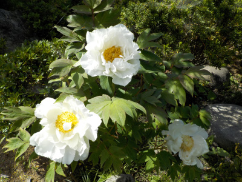
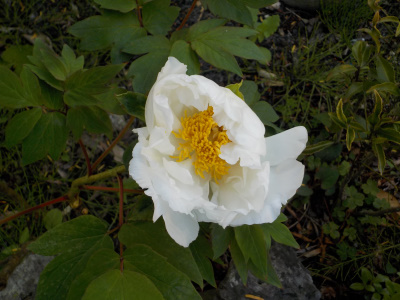
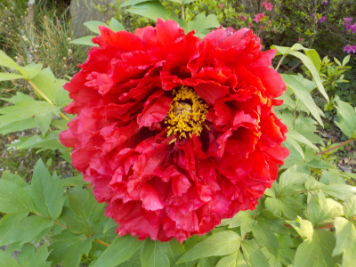
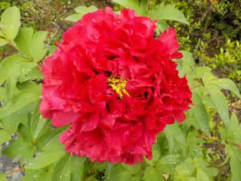
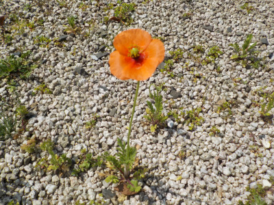
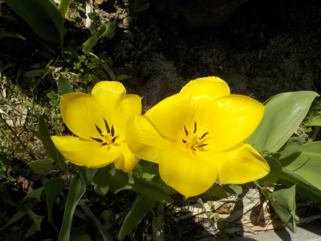

遊びで植物を育てよう
2023/04/22
今日もボタンの花見です。

右下が先に咲いたもの。左が見頃で、上がこれから開くものです。

赤紫のボタンも開花しました。もうちょっとでボタンの時期は終わりですね。
【4月TOP】
【日記TOP】
【園芸TOP】
2023/04/17
白いボタンも咲きました。

まだ開ききってないですね。
たぶん明日が見頃かな。

2日前に綺麗だったボタンは萎れてきました。
ボタンの花の期間は短いです。
【4月TOP】
【日記TOP】
【園芸TOP】
2023/04/15
ボタンの花が咲きました。

このボタンはなんだかしわくちゃな花びらです。ちょっとカーネーションっぽいかな。
【4月TOP】
【日記TOP】
【園芸TOP】
2023/04/01
ナガミヒナゲシが今年も咲いています。

去年沢山抜きましたが、今年もあちこちで芽が出ています。
花を見つけたら抜こうと思っています。
【4月TOP】
【日記TOP】
【園芸TOP】
2023/04/01
このチューリップの花は咲ききった感じです。

なんとなく花の形がユニークになりました。もうすぐ散りますね。
【4月TOP】
【日記TOP】
【園芸TOP】
過去の日記
【2024年4月の日記】
【2023年4月の日記】
【2022年4月の日記】
【2021年4月の日記】
【2020年4月の日記】
【2019年4月の日記】
【2018年4月の日記】
【2017年4月の日記】
【2016年4月の日記】
【2015年4月の日記】
【2014年4月の日記】
【2013年4月の日記】
【4月TOP】
【日記TOP】
【園芸TOP】
畑仕事じゃないよ。
【おいしいものを食べよう。】【しっかり寝よう。】
【ソロ活をしよう!】【季節感のあることをしよう。】【動画視聴はほどほどに。】【当サイトの全てのコンテンツは無断転載禁止です。】